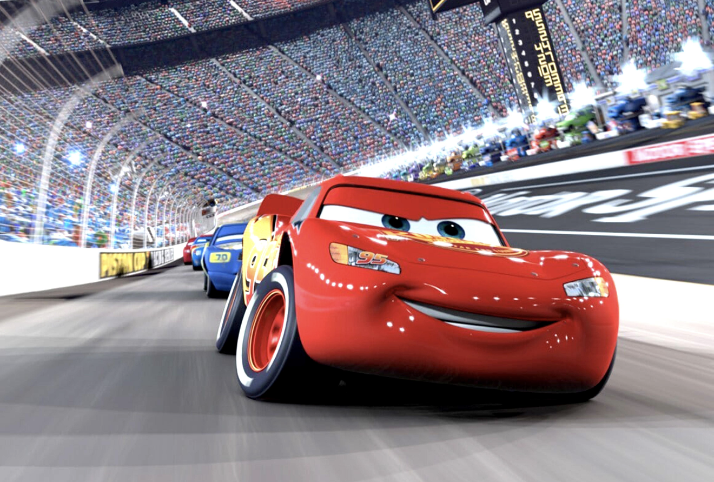
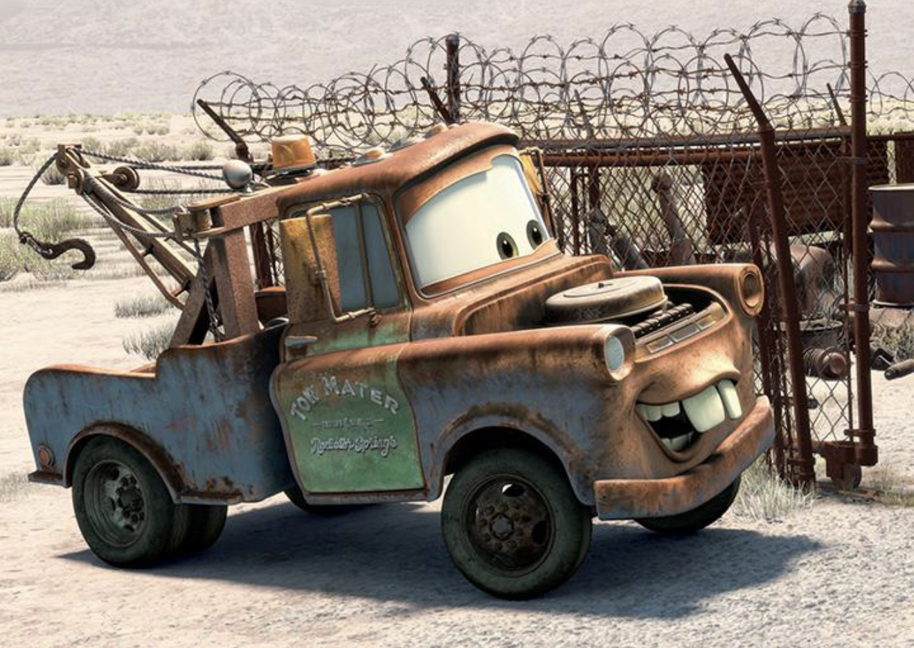
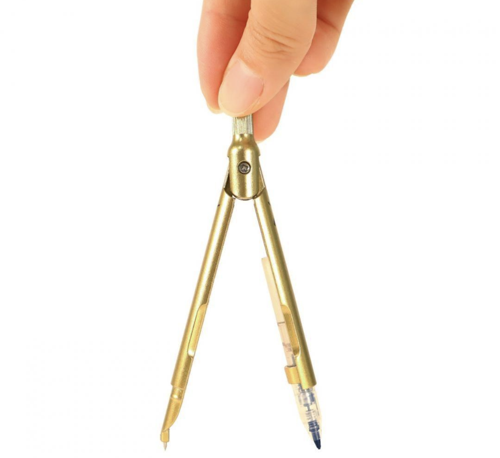
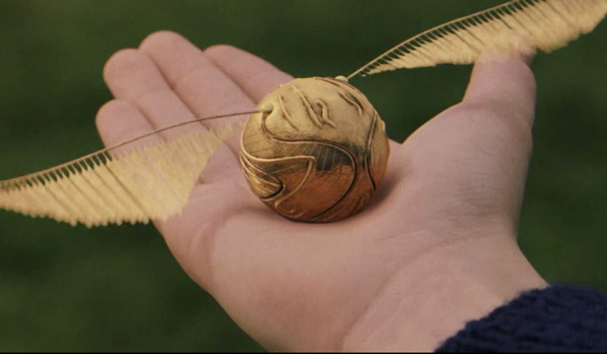

Организаторы хотят, чтобы он был идеально круглым. Но как построить такую линию?
Как построить линию, все точки которой находятся на одинаковом расстоянии от центра?
Обсудите с классом способы построения.
Радиус, см:

Как проверить, что все эти точки находятся на одинаковом расстоянии от центра?
Нажатие на кнопку скрывает или снова показывает отрезок.
Все точки окружности находятся на расстоянии от её .
Все точки окружности находятся на одинаковом расстоянии от её центра.
Окружность — это геометрическая фигура, состоящая из всех точек плоскости, равноудалённых от данной точки, называемой центром окружности.
Чтобы построить окружность, мы выбираем центр и расстояние от него. Все точки, расположенные на этом расстоянии, образуют окружность.
Радиус окружности — это отрезок, соединяющий центр окружности с любой точкой этой окружности.
OA = OB = OC = r
Окружность радиуса 3 см. Где находятся точки K, L, M, N?
В магическом лабиринте нужно найти все точки, которые находятся ровно в трёх сантиметрах от точки O.
Как найти все точки, удалённые от точки O ровно на 3 см?

Перетащите точки: какие из них ровно в 3 см от O?
Сравните две фигуры.
Откройте выданную книжку и выполните задания на страницах 2–5. Работайте с циркулем и линейкой, записывайте результаты и обязательно сформулируйте вывод.
Что нам удалось выяснить? Сформулируйте устно.
Сегодня я понял(а), что…
Итог: окружность · центр · радиус · радиусы одной окружности равны.